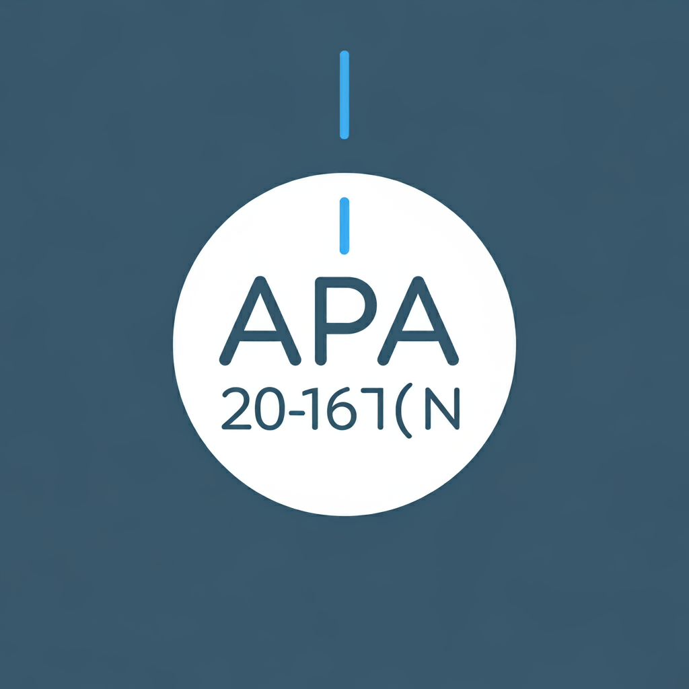

Normas principales de la netiqueta
La netiqueta se refiere a las normas de comportamiento y cortesía en entornos digitales. Aquí te presento las principales reglas de la netiqueta:
1. Respeto y cortesía:
- Trata a los demás como quieres ser tratado
- Evita lenguaje ofensivo, insultos o ataques personales
2. Claridad en la comunicación:
- Sé claro y conciso en tus mensajes
- Usa una gramática y ortografía correctas
3. No escribir todo en mayúsculas:
- Se interpreta como gritar en la comunicación digital
- Usa mayúsculas solo cuando sea necesario
4. Privacidad:
- Respeta la privacidad de los demás
- No compartas información personal de otros sin su consentimiento
5. Contextualiza:
- Usa asuntos claros en los correos electrónicos
- Proporciona contexto en las respuestas en foros o hilos de discusión
6. Respeta el tiempo de los demás:
- No envíes correos masivos o spam
- Piensa si tu mensaje es necesario antes de enviarlo
7. Sé cuidadoso con el humor y el sarcasmo:
- Pueden malinterpretarse fácilmente en texto
- Usa emojis o aclaraciones si es necesario
8. Respeta los derechos de autor:
- No compartas contenido protegido sin permiso
- Cita las fuentes cuando uses material de otros
9. Modera tu participación:
- No domines las conversaciones en grupos o foros
- Evita las discusiones acaloradas o "flame wars"
10. Adapta tu lenguaje al medio:
- Usa un tono más formal en correos profesionales
- Puedes ser más informal en redes sociales personales
11. Ten cuidado con los archivos adjuntos:
- No envíes archivos pesados sin avisar
- Asegúrate de que los archivos estén libres de virus
12. Respeta las normas específicas:
- Cada comunidad online puede tener sus propias reglas
- Lee y sigue las pautas de cada plataforma
13. Sé paciente y comprensivo:
- No todos tienen el mismo nivel de habilidad tecnológica
- Ofrece ayuda de manera amable cuando sea apropiado
14. Piensa antes de publicar:
- Recuerda que lo que publicas en internet puede ser permanente
- Considera cómo tus palabras podrían interpretarse en el futuro

Phising
El phishing (pronunciado "fishing" en inglés) es una técnica de ciberdelincuencia que busca engañar a las personas para que revelen información sensible. Aquí tienes una explicación detallada:
1. Definición:
El phishing es un tipo de estafa en línea donde los atacantes se hacen pasar por entidades legítimas para robar datos personales, financieros o de acceso.
2. Cómo funciona:
- Los estafadores crean mensajes o sitios web que parecen auténticos.
- Suelen usar logos y diseños similares a los de empresas reales.
- Solicitan que el usuario proporcione información confidencial.
3. Métodos comunes:
- Correos electrónicos fraudulentos
- Mensajes de texto (smishing)
- Llamadas telefónicas (vishing)
- Sitios web falsos
4. Información que suelen buscar:
- Contraseñas
- Números de tarjetas de crédito
- Información bancaria
- Números de seguridad social
5. Señales de alerta:
- Solicitudes urgentes de información
- Errores gramaticales o de ortografía
- URLs sospechosas
- Remitentes desconocidos
6. Cómo protegerse:
- Verificar siempre la fuente de los mensajes
- No hacer clic en enlaces sospechosos
- Usar autenticación de dos factores
- Mantener actualizado el software de seguridad
7. Impacto:
El phishing puede resultar en robo de identidad, pérdidas financieras y acceso no autorizado a cuentas personales o empresariales.
Es importante estar siempre alerta y educar a otros sobre estos riesgos para prevenir caer
BASES CIENTIFICAS
Las bases científicas en psicología son los fundamentos teóricos y metodológicos que permiten estudiar el comportamiento y los procesos mentales de manera sistemática y rigurosa. Estas bases son esenciales para el desarrollo y la práctica de la psicología como una disciplina científica. Te explicaré su importancia y función:
1. Definición:
Las bases científicas en psicología se refieren al conjunto de principios, métodos y conocimientos derivados de la investigación empírica que sustentan la comprensión y el estudio de la mente y el comportamiento humano.
2. Componentes principales:
- Método científico
- Teorías psicológicas
- Investigación empírica
- Análisis estadístico
- Principios éticos en la investigación
3. Funciones en la psicología:
a) Proporcionar un marco sistemático:
- Permiten abordar los fenómenos psicológicos de manera ordenada y lógica.
- Ayudan a formular hipótesis comprobables sobre el comportamiento y los procesos mentales.
b) Garantizar la objetividad:
- Reducen el sesgo personal en la interpretación de los fenómenos psicológicos.
- Promueven la replicabilidad de los estudios y hallazgos.
c) Desarrollar y validar teorías:
- Facilitan la creación de modelos explicativos sobre diversos aspectos de la psicología.
- Permiten poner a prueba y refinar las teorías existentes.
d) Mejorar las intervenciones:
- Fundamentan el desarrollo de tratamientos y terapias basadas en evidencia.
- Ayudan a evaluar la eficacia de las intervenciones psicológicas.
e) Avanzar el conocimiento:
- Contribuyen al descubrimiento de nuevos fenómenos y relaciones en el comportamiento humano.
- Permiten la integración de hallazgos de diferentes áreas de la psicología y otras disciplinas.
f) Informar políticas y prácticas:
- Proporcionan información basada en evidencia para la toma de decisiones en ámbitos como la educación, la salud mental y las políticas públicas.
g) Diferenciar la psicología científica de las pseudociencias:
- Establecen criterios para distinguir entre prácticas basadas en evidencia y aquellas sin fundamento científico.
4. Importancia en la formación y práctica profesional:
- Capacitan a los psicólogos para evaluar críticamente la investigación y la literatura científica.
- Fomentan una práctica profesional ética y basada en evidencia.
5. Desafíos:
- Abordar la complejidad de los fenómenos psicológicos manteniendo el rigor científico.
- Adaptar los métodos de investigación a los avances tecnológicos y sociales.
Las bases científicas son fundamentales para el progreso y la credibilidad de la psicología como disciplina. Permiten un enfoque sistemático y objetivo en el estudio de la mente y el comportamiento, lo que a su vez conduce a intervenciones más efectivas y a un mejor entendimiento de la naturaleza humana.
CULTURA DIGITAL
La cultura digital es un concepto amplio que se refiere a cómo la tecnología digital y el Internet han transformado la forma en que vivimos, trabajamos, nos comunicamos y entendemos el mundo. Aquí te presento un resumen de los aspectos clave de la cultura digital:
1. Definición:
La cultura digital engloba las prácticas, costumbres, formas de interacción y productos culturales que han surgido con el uso generalizado de las tecnologías digitales.
2. Características principales:
a) Conectividad constante:
- Acceso permanente a información y comunicación.
- Redes sociales y plataformas de mensajería instantánea.
b) Virtualización:
- Espacios y experiencias virtuales (realidad virtual, metaverso).
- Trabajo y educación a distancia.
c) Información abundante:
- Acceso inmediato a grandes cantidades de datos.
- Desafíos en la verificación y selección de información confiable.
d) Nuevas formas de expresión:
- Memes, GIFs, videos cortos, blogs, podcasts.
- Arte digital y nuevos medios.
e) Participación y colaboración:
- Creación de contenido generado por usuarios.
- Proyectos colaborativos en línea (ej. Wikipedia).
f) Economía digital:
- Comercio electrónico y nuevos modelos de negocio.
- Criptomonedas y tecnología blockchain.
3. Impacto en diferentes ámbitos:
a) Educación:
- E-learning y recursos educativos abiertos.
- Nuevas competencias digitales necesarias.
b) Trabajo:
- Teletrabajo y nuevas profesiones digitales.
- Automatización y cambios en el mercado laboral.
c) Relaciones sociales:
- Comunidades en línea y redes sociales.
- Nuevas formas de comunicación y dating online.
d) Entretenimiento:
- Streaming de video y música.
- Videojuegos y e-sports.
e) Política y activismo:
- Movimientos sociales organizados en redes.
- Gobierno electrónico y participación ciudadana digital.
4. Desafíos de la cultura digital:
- Brecha digital y desigualdad en el acceso.
- Privacidad y seguridad de datos.
- Adicción a la tecnología y salud mental.
- Desinformación y fake news.
- Propiedad intelectual en la era digital.
5. Tendencias futuras:
- Inteligencia artificial y machine learning.
- Internet de las cosas (IoT).
- Ciudades inteligentes.
- Realidad aumentada y mixta.
La cultura digital está en constante evolución, redefiniendo cómo interactuamos con la tecnología y entre nosotros. Comprender sus implicaciones es crucial para navegar efectivamente en el mundo contemporáneo.
CITAR APA
Por supuesto. El estilo APA (American Psychological Association) es ampliamente utilizado en ciencias sociales y otras disciplinas. Aquí te explico cómo citar en APA, centrándome en la 7ª edición, que es la más reciente:
1. Citas en el texto:
a) Cita parentética:
- (Apellido del autor, año)
- Ejemplo: (García, 2020)
- Para citas directas, incluye el número de página: (García, 2020, p. 25)
b) Cita narrativa:
- Apellido del autor (año)
- Ejemplo: García (2020) afirma que...
2. Lista de referencias:
a) Libro:
Apellido, N. (Año). Título del libro en cursiva. Editorial.
Ejemplo:
García, M. (2020). Introducción a la psicología. Editorial Paidós.
b) Artículo de revista:
Apellido, N. (Año). Título del artículo. Nombre de la Revista en Cursiva, volumen(número), páginas.
Ejemplo:
López, A. (2019). Efectos del estrés en estudiantes. Revista de Psicología, 15(2), 23-40.
c) Página web:
Apellido, N. (Fecha). Título de la página. Nombre del sitio. URL
Ejemplo:
Martínez, C. (2021, 15 de marzo). Beneficios de la meditación. MindfulnessHoy. https://www.mindfulnesshoy.com/beneficios-meditacion
3. Reglas generales:
- Ordena alfabéticamente la lista de referencias.
- Usa sangría francesa (la primera línea al margen, las siguientes con sangría).
- Para obras con múltiples autores, usa "y" antes del último autor en español, "&" en inglés.
- Para más de 20 autores, lista los primeros 19, luego "..." y el último autor.
4. Casos especiales:
a) Sin autor:
- Usa el título de la obra en lugar del autor.
b) Sin fecha:
- Usa (s.f.) en español o (n.d.) en inglés.
c) Fuentes secundarias:
- Cita la fuente secundaria en la lista de referencias.
- En el texto: (como se citó en Apellido, año)
5. Recursos adicionales:
- Muchas universidades ofrecen guías detalladas de APA.
- Existen generadores de citas en línea que pueden ayudar.

Recuerda que la precisión en las citas es crucial para evitar el plagio y dar crédito adecuado a las fuentes.